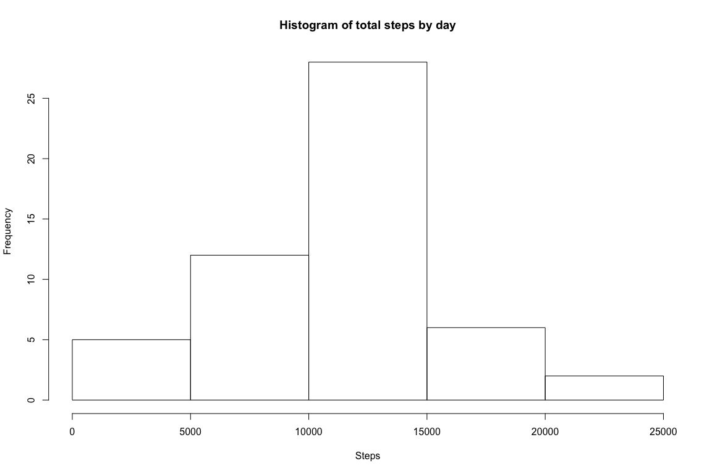
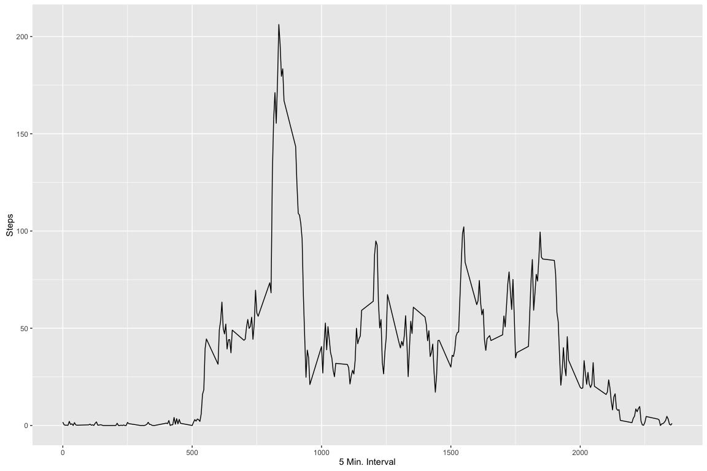
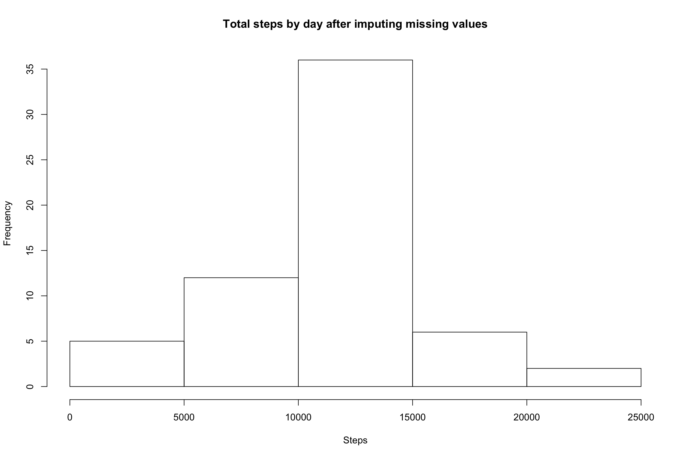
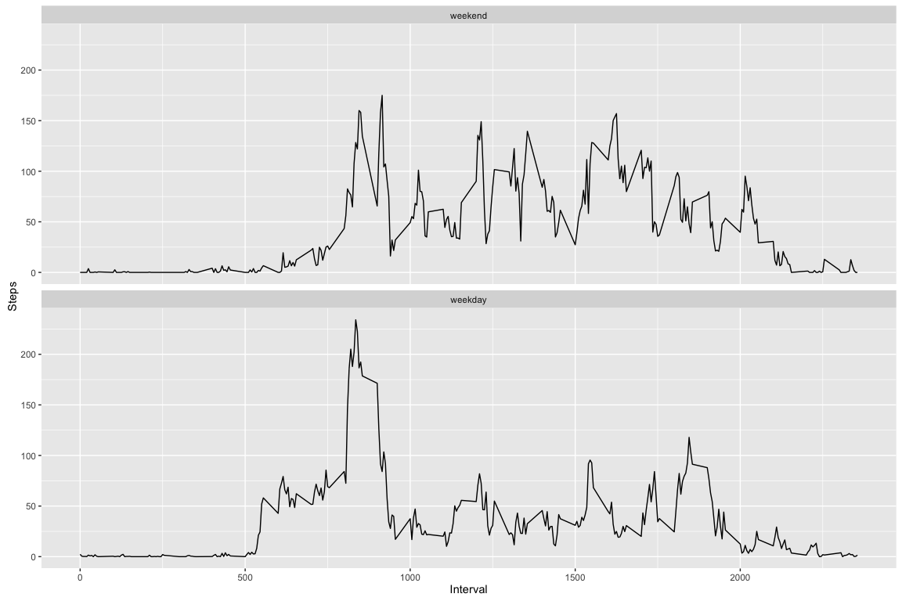

activityDt <- read.csv(unz("activity.zip", "activity.csv"), header=TRUE, sep=",")aggDt <- aggregate(activityDt$steps , by = list(activityDt$date), FUN = sum )
colnames(aggDt) <- c("Date","Steps")hist(aggDt$Steps, xlab = "Steps" , main = "Histogram of total steps by day")
summary(aggDt$Steps)[c("Median","Mean")]## Median Mean
## 10760 10770library(ggplot2)
aggDtInterval <- aggregate(activityDt$steps , by = list(activityDt$interval), FUN = mean, na.rm = TRUE)
colnames(aggDtInterval) <- c("Interval","Steps")
ggplot(aggDtInterval, aes(Interval, Steps)) + geom_line() +
xlab("5 Min. Interval") + ylab("Steps")
maxIntvl <- aggDtInterval[which(aggDtInterval$Steps == max(aggDtInterval$Steps)), c("Interval") ]missingValues <- sum(is.na(activityDt$steps))We will fill in the missing values by taking the mean of all the values for that interval
library(dplyr)
activityDtImpute <- activityDt %>% group_by(interval) %>% mutate(steps= replace(steps, is.na(steps), mean(steps, na.rm=TRUE)))Create a new dataset that is equal to the original dataset but with the missing data filled in with the mean of the values for that interval.
aggDtImpute <- aggregate(activityDtImpute$steps , by = list(activityDtImpute$date), FUN = sum, na.rm = FALSE)hist(aggDtImpute$x, xlab = "Steps" , main = "Total steps by day after imputing missing values")
summary(aggDtImpute$x)[c("Median","Mean")]## Median Mean
## 10770 10770#convert the date column to a Date
activityDt$date <- as.Date(activityDt$date)
#add a new factor column that indicates if the row is a weekday or weekend
activityDt$wday <- factor((weekdays(activityDt$date) %in% c("Saturday","Sunday")),levels=c(TRUE, FALSE), labels=c('weekend', 'weekday'))#aggregate the data by taking the average of steps by weekday or weekend
aggDtIntervalWk <- aggregate(activityDt$steps , by = list(activityDt$interval,activityDt$wday), FUN = mean, na.rm = TRUE)
ggplot(aggDtIntervalWk, aes(Group.1, x)) + geom_line() +xlab("Interval") + ylab("Steps") + facet_grid(~Group.2) +facet_wrap(~Group.2, nrow = 2)